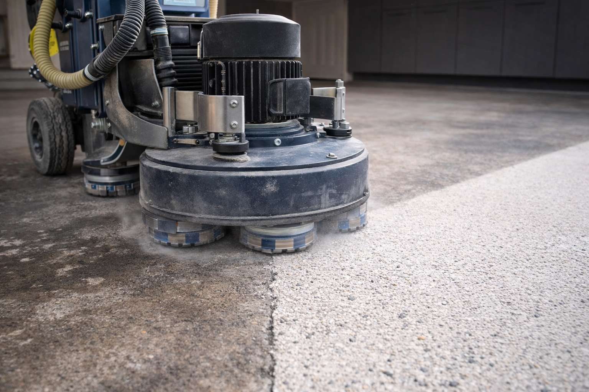
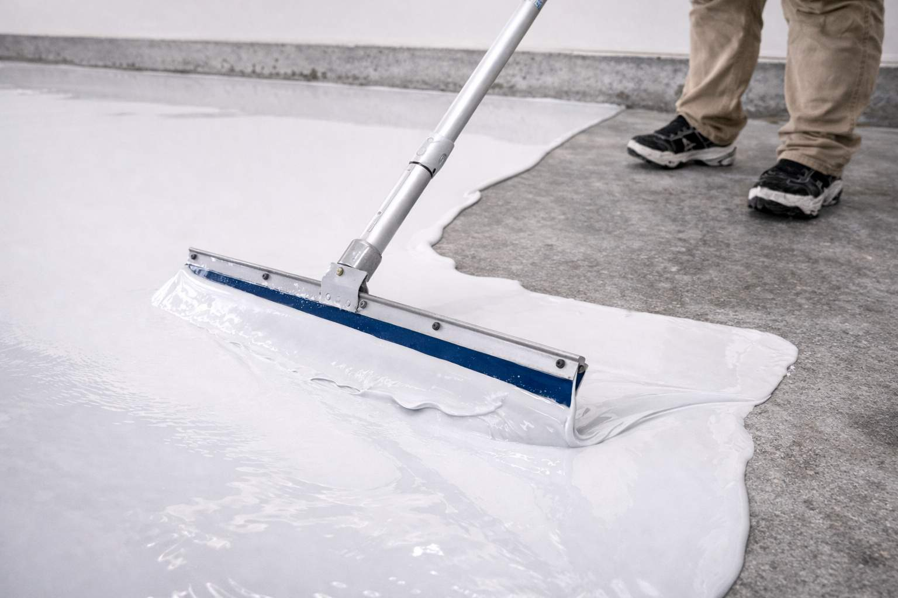

Day 1: Consultation
We schedule a free on-site assessment. We inspect your slab, take measurements, discuss color and finish options, and provide a written quote. No high-pressure sales - just facts.

Every Garage Pros OC floor follows the same rigorous process - because shortcuts show up later as peeling, hot-tire failure, and fading. We do it right the first time.
ArmorPoxy System Specialist | 100% Solids Guarantee
Why Process Is Everything
Garage floor failures - peeling, hot-tire lifting, discoloration - are almost never a material failure. They’re a process failure. Wrong surface prep. Wrong epoxy chemistry. Wrong sealer. The ArmorClad 5-Step process eliminates all three failure points by specifying the right technique at every phase.
Before any equipment touches your floor, we assess the concrete. We check for moisture vapor emission (MVE), existing coatings that must be removed, active cracks, spalling, oil contamination, and slab age. This inspection determines the right primer, the right epoxy viscosity, and whether additional crack repair is needed. You receive a transparent, itemized quote with zero pressure. There are no surprises on installation day.
No-Cost AssessmentWe use industrial diamond-grinding equipment to mechanically open the concrete surface to a Concrete Surface Profile (CSP) 3. This creates thousands of microscopic anchor points that allow the epoxy to bond at a mechanical level - not just at the surface. Acid washing, the common alternative, is inconsistent and leaves contamination. Diamond grinding is the only preparation method that delivers a reliable, long-term bond with 100% solids epoxy. All dust is HEPA-vacuumed during grinding to protect your property.
CSP 3 Profile
Grinding reveals every flaw in the concrete - and we address all of them before any coating is applied. Hairline cracks are filled with a semi-rigid polyurea injection compound that moves with the slab and won’t telegraph through the coating. Spalled or pitted areas are rebuilt with a cementitious repair mortar. Control joints are routed, cleaned, and filled with a flexible joint compound. Skipping this step is how contractors hide problems under a coating - we eliminate them instead.
Structural Repairs IncludedThe ArmorClad base coat is a 100% solids, two-part epoxy formulated to prevent hot-tire pick-up - the most common failure mode for residential garage coatings. Because there is zero water or solvent in the formula, every milliliter of wet epoxy converts to a mil of cured, dense coating. There is no shrinkage, no outgassing, and no pinholes. Color flakes or decorative chips are broadcast into the wet coat immediately after application, creating the dimensional finish that distinguishes a professional installation. The cured base is moisture-tolerant and chemically resistant to motor oil, brake fluid, and household solvents.
100% Solids - No Shrinkage
A final broadcast of fine anti-slip quartz aggregate is embedded across the surface before the top coat is applied, providing grip even when the floor is wet. The seal coat is a pure aliphatic polyaspartic - a next-generation floor sealer that is fully UV-stable, meaning it will not yellow, amber, or chalk under direct sunlight or through garage windows exposed to coastal California sun. The polyaspartic cures rapidly, reaching full chemical resistance in under 24 hours, and delivers the high-gloss or satin sheen that makes the finished floor look like a luxury showroom.
UV-Stable | Full Cure <24 HoursWhat You Can Expect
A typical residential garage installation is completed in one day. Most homeowners can use their garage within 24 hours of project completion.
We schedule a free on-site assessment. We inspect your slab, take measurements, discuss color and finish options, and provide a written quote. No high-pressure sales - just facts.
Our crew arrives with all equipment. Diamond grinding, repairs, base coat, broadcast, and top coat are completed in a single visit for most standard two- and three-car garages.
The polyaspartic top coat reaches full chemical resistance within 24 hours. Light foot traffic is typically safe at 6–8 hours. We’ll confirm exact timelines based on temperature and humidity.
Common Questions
Yes - the floor must be completely clear of vehicles, shelving, and stored items. We can advise on how to organize your move-out to minimize disruption.
Yes, but the existing coating must be fully removed by diamond grinding before we apply ArmorClad. Coating over existing paint always leads to delamination - we never skip this step.
The polyaspartic top coat is UV-stable and works well on covered patios and driveways. For fully exposed outdoor surfaces, we’ll specify the correct product variant during your consultation.
Yes. Once fully cured, the ArmorClad system is inert and non-toxic. We use low-VOC formulations during application and recommend adequate ventilation on install day.